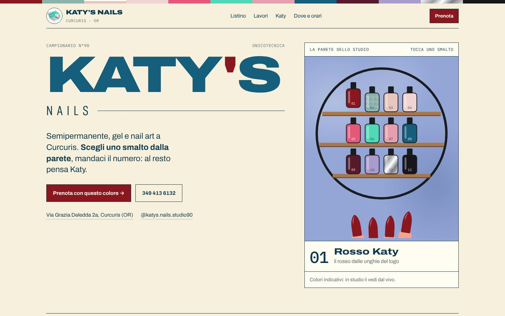

Bozza 1Campionario
Grafico e moderno, come una cartella colori stampata. La parete tonda degli smalti dello studio diventa il selettore: tocchi una boccetta, la pagina si colora e il messaggio WhatsApp parte già con il numero del colore.